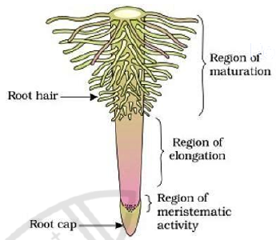
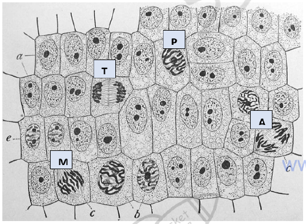

Mitosis, meiosis and reproduction
Cells divide for two reasons: to make identical copies for growth and repair, and to make gametes for sexual reproduction. This page explains the cell cycle, what happens in each stage of mitosis, how to count dividing cells in a root tip, and how meiosis differs by halving the chromosome number and shuffling the genes.
The cell cycle
The cell cycle is the sequence of growth and division a cell goes through. Interphase is the longest part, and it is when the cell is not dividing but is doing its normal work and preparing to divide. Interphase has three phases. In G1 the cell grows and makes proteins and organelles. In S phase the DNA is copied, so each chromosome becomes two identical sister chromatids held together at the centromere. In G2 the cell checks the copied DNA and makes the proteins needed for division. Mitosis then divides the nucleus, and cytokinesis divides the cytoplasm.
The cell cycle is controlled at checkpoints. Damaged DNA or incomplete replication can stop the cycle until the problem is fixed. If a cell ignores these checkpoints, it may divide uncontrollably, which is one cause of cancer.
The stages of mitosis
Mitosis produces two nuclei that each contain the same number and type of chromosomes as the parent cell. The key to this is that each sister chromatid is pulled to opposite poles of the cell. Mitosis is a continuous process, but it is described in four stages.
- Prophase: chromatin condenses into visible, thick chromosomes. The nucleolus disappears and the nuclear envelope breaks down. Centrioles (in animal cells) move to opposite poles and a spindle of microtubules begins to form.
- Metaphase: chromosomes line up along the equator of the cell. Spindle fibres attach to the centromere of each chromosome.
- Anaphase: the centromeres divide and the sister chromatids are pulled apart toward opposite poles. Each chromatid is now a chromosome in its own right.
- Telophase: chromosomes reach the poles and decondense. A nuclear envelope forms round each set, the nucleolus reappears and the spindle breaks down.
Cytokinesis usually overlaps with late telophase. In animal cells the membrane is pinched in by a contractile ring of actin. In plant cells a new cell wall forms across the middle of the cell, starting from vesicles that fuse to make a cell plate.
Mitosis produces two genetically identical diploid cells. Identical copies are the point: a skin cell replacing a damaged cell must have exactly the same DNA as the one it replaces.
Why mitosis matters
Mitosis is the basis of growth, because an increase in cell number increases the size of an organism. It also replaces cells that are worn out or damaged, such as skin and gut lining cells. Some organisms reproduce asexually by mitosis alone. Because the offspring are genetically identical to the parent, they inherit the same genotype, which is an advantage in a stable environment but a risk if conditions change.
Mitosis happens in meristems in plants, which are regions of stem cells such as the root tip. Meristematic cells are small, have thin walls and no large vacuole, and keep dividing throughout the plant's life.
Measuring mitosis in a root tip
A root tip squash shows mitosis under the microscope. The last 5 to 10 mm of a root tip is cut off, because this region contains the meristem. The tissue is softened in acid, which breaks down the pectin holding the cell walls together. The tip is stained with a dye such as acetocarmine, which binds to DNA and makes chromosomes visible. Pressing gently on the coverslip separates the cells into a single layer, so chromosomes can be seen clearly.
The mitotic index is the proportion of cells in a sample that are undergoing mitosis. It is calculated from the number of cells showing visible chromosomes divided by the total number of cells in the view, multiplied by 100. Because the cell cycle is mostly interphase, the mitotic index is usually low, and a higher value shows that the tissue is growing quickly.
Count the total number of cells in one field of view.
Use the same field and magnification for every count so the results can be compared.
Count the cells that show visible chromosomes, which means cells in prophase, metaphase, anaphase or telophase.
Divide the number in mitosis by the total, then multiply by 100 to get a percentage.
A percentage makes counts from different fields directly comparable.


The mitotic index does not tell you the length of each stage. A stage that lasts longer simply has more cells in it at any moment. Interphase covers most of the cell cycle, so most cells in a root tip are not dividing.
Meiosis
Meiosis is the division that produces gametes such as sperm, eggs and pollen. The purpose is to halve the chromosome number. Humans are diploid, with 46 chromosomes in 23 homologous pairs. Gametes are haploid, with 23 single chromosomes. When two gametes fuse at fertilisation, the diploid number is restored. Without meiosis, the chromosome number would double in every generation.
Meiosis involves two divisions, meiosis I and meiosis II, after one round of DNA replication. In meiosis I, homologous chromosomes pair up in prophase I, and the pairs are arranged along the equator in metaphase I. Homologous pairs are then pulled apart in anaphase I, so each daughter cell receives one chromosome from each pair. In prophase I, chromatids of homologous chromosomes can also swap sections at points called chiasmata. This is crossing over, and it creates new combinations of alleles. Meiosis II is similar to mitosis: the sister chromatids separate, and four haploid cells result.
Meiosis gives genetic variation through two mechanisms: crossing over during prophase I, and independent assortment, which is the random orientation of each homologous pair in metaphase I. Together with random fertilisation, these produce offspring that differ from their parents and from each other.
Because each homologous pair lines up independently of the others, n pairs give 2ⁿ possible combinations of chromosomes in the gametes.
Comparing mitosis and meiosis
| Feature | Mitosis | Meiosis |
|---|---|---|
| Number of divisions | One | Two |
| Daughter cells produced | Two | Four |
| Chromosome number of daughters | Same as parent (diploid) | Half the parent (haploid) |
| Genetic make-up of daughters | Identical to parent | Genetically different from parent and each other |
| Pairing of homologous chromosomes | No | Yes, in prophase I |
| Role | Growth, repair, asexual reproduction | Gamete production for sexual reproduction |
Sexual and asexual reproduction
Asexual reproduction involves one parent and produces offspring by mitosis, so the offspring are clones. It is quick and needs no mate, which is useful when a population is well adapted to its habitat. Sexual reproduction uses gametes from two parents, which are fused at fertilisation. Each offspring inherits a new mix of alleles. This variation allows a population to adapt when the environment changes, such as when a new disease appears. The cost is that sexual reproduction takes more time and energy to find a mate.
In an exam answer, link each process to its result: mitosis gives identical cells because the chromosomes are copied and separated without pairing; meiosis gives variation because homologous pairs separate and crossing over mixes alleles.
Quick checks
In which stage of mitosis do sister chromatids separate and move to opposite poles?
Anaphase is when the centromeres divide and the chromatids are pulled apart. Metaphase is when chromosomes line up, and telophase is when they arrive at the poles and decondense, so both are common wrong answers.
A human cell has 46 chromosomes before meiosis. How many chromosomes does each gamete contain?
Meiosis halves the chromosome number, so each gamete has 23 single chromosomes. The answer 46 is the common mistake of forgetting that meiosis reduces the number. The answer 92 is the number of chromatids present after DNA replication, before division, so it is a trap for students who mix up chromosomes and chromatids.
Which process produces genetic variation during meiosis I?
Crossing over exchanges sections between homologous chromatids in prophase I, creating new allele combinations. DNA replication copies DNA without changing it, and the other two options produce identical cells, so they are the wrong answers.
A root tip has 200 cells in view, and 30 of them show visible chromosomes. What is the mitotic index?
Divide 30 by 200 and multiply by 100, which gives 15.0 %. Leaving out the multiplication by 100 gives 0.15, which is the common error.